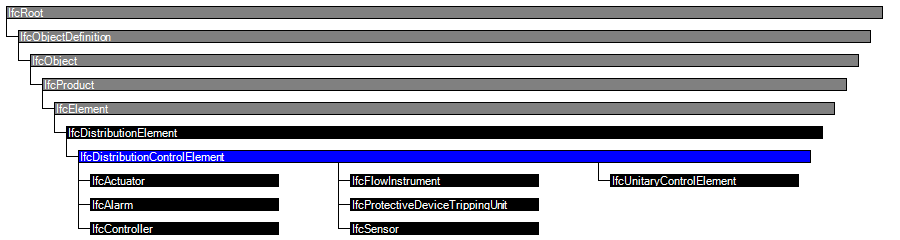

| Komponente der Gebäudeautomation (allgemein) |
 | Distribution Control Element |
 | Élément de circuit de distribution |
| Item | SPF | XML | Change | Description | 4.0.0.0 |
|---|---|---|---|---|
| IfcDistributionControlElement | ||||
| OwnerHistory | MODIFIED | Instantiation changed to OPTIONAL. | ||
| ControlElementId | X | DELETED | 4.0.1.0 | |
| IfcDistributionControlElement | ||||
| HasCoverings | ADDED |
The distribution element IfcDistributionControlElement defines occurrence elements of a building automation control system that are used to impart control over elements of a distribution system.
IfcDistributionControlElement defines elements of a building automation control system. These are typically used to control distribution system elements to maintain variables such as temperature, humidity, pressure, flow, power, or lighting levels, through the modulation, staging or sequencing of mechanical or electrical devices. The three general functional categories of control elements are as follows:
Since IfcDistributionControlElement and its subtypes typically relate to many different distribution flow elements (IfcDistributionFlowElement), the objectified relationship IfcRelFlowControlElements has been provided to relate control and flow elements as required.
The key distinction between IfcDistributionFlowElement and IfcDistributionControlElement is whether it is internal or external to the flow system, respectively. For example, the distinction between IfcFlowMeter (subtype of IfcDistributionFlowElement measuring a flow quantity) and IfcFlowInstrument (subtype of IfcDistributionControlElement measuring a flow quality), is based on this principal. A physical device that connects within the flow system in which it measures (having inlet/outlet pipes for the measured substance) follows the IfcDistributionFlowElement hierarchy (and therefore IfcFlowMeter which measures the flow internally). Otherwise, if it monitors/controls but does not connect inline within the flow system (it is external or is a component of another device), then it follows the IfcDistributionControlElement hierarchy (and therefore IfcFlowInstrument which may display various attributes through connected sensors).
HISTORY New entity in IFC2.0.
IFC4 CHANGE Attribute ControlElementId attribute deleted; replaced by classification usage. Ports are now primarily defined using IfcRelNests to enable definition of ports at type definitions (both forward and backward compatible), provide a logical order, and reduce the number of relationship objects needed. The relationship IfcRelConnectsPortToElement is still supported, however is now specific to dynamically connected ports.
| # | Attribute | Type | Cardinality | Description | R |
|---|

| # | Attribute | Type | Cardinality | Description | R |
|---|---|---|---|---|---|
| IfcRoot | |||||
| 1 | GlobalId | IfcGloballyUniqueId | Assignment of a globally unique identifier within the entire software world. | X | |
| 2 | OwnerHistory | IfcOwnerHistory | ? |
Assignment of the information about the current ownership of that object, including owning actor, application, local identification and information captured about the recent changes of the object,
NOTE only the last modification in stored - either as addition, deletion or modification. IFC4 CHANGE The attribute has been changed to be OPTIONAL. | X |
| 3 | Name | IfcLabel | ? | Optional name for use by the participating software systems or users. For some subtypes of IfcRoot the insertion of the Name attribute may be required. This would be enforced by a where rule. | X |
| 4 | Description | IfcText | ? | Optional description, provided for exchanging informative comments. | X |
| IfcObjectDefinition | |||||
| HasAssignments | IfcRelAssigns @RelatedObjects | S[0:?] | Reference to the relationship objects, that assign (by an association relationship) other subtypes of IfcObject to this object instance. Examples are the association to products, processes, controls, resources or groups. | X | |
| Nests | IfcRelNests @RelatedObjects | S[0:1] | References to the decomposition relationship being a nesting. It determines that this object definition is a part within an ordered whole/part decomposition relationship. An object occurrence or type can only be part of a single decomposition (to allow hierarchical strutures only).
IFC4 CHANGE The inverse attribute datatype has been added and separated from Decomposes defined at IfcObjectDefinition. | ||
| IsNestedBy | IfcRelNests @RelatingObject | S[0:?] | References to the decomposition relationship being a nesting. It determines that this object definition is the whole within an ordered whole/part decomposition relationship. An object or object type can be nested by several other objects (occurrences or types).
IFC4 CHANGE The inverse attribute datatype has been added and separated from IsDecomposedBy defined at IfcObjectDefinition. | X | |
| HasContext | IfcRelDeclares @RelatedDefinitions | S[0:1] | References to the context providing context information such as project unit or representation context. It should only be asserted for the uppermost non-spatial object.
IFC4 CHANGE The inverse attribute datatype has been added. | ||
| IsDecomposedBy | IfcRelAggregates @RelatingObject | S[0:?] | References to the decomposition relationship being an aggregation. It determines that this object definition is whole within an unordered whole/part decomposition relationship. An object definitions can be aggregated by several other objects (occurrences or parts).
IFC4 CHANGE The inverse attribute datatype has been changed from the supertype IfcRelDecomposes to subtype IfcRelAggregates. | X | |
| Decomposes | IfcRelAggregates @RelatedObjects | S[0:1] | References to the decomposition relationship being an aggregation. It determines that this object definition is a part within an unordered whole/part decomposition relationship. An object definitions can only be part of a single decomposition (to allow hierarchical strutures only).
IFC4 CHANGE The inverse attribute datatype has been changed from the supertype IfcRelDecomposes to subtype IfcRelAggregates. | X | |
| HasAssociations | IfcRelAssociates @RelatedObjects | S[0:?] | Reference to the relationship objects, that associates external references or other resource definitions to the object.. Examples are the association to library, documentation or classification. | X | |
| IfcObject | |||||
| 5 | ObjectType | IfcLabel | ? |
The type denotes a particular type that indicates the object further. The use has to be established at the level of instantiable subtypes. In particular it holds the user defined type, if the enumeration of the attribute PredefinedType is set to USERDEFINED.
| X |
| IsTypedBy | IfcRelDefinesByType @RelatedObjects | S[0:1] | Set of relationships to the object type that provides the type definitions for this object occurrence. The then associated IfcTypeObject, or its subtypes, contains the specific information (or type, or style), that is common to all instances of IfcObject, or its subtypes, referring to the same type.
IFC4 CHANGE New inverse relationship, the link to IfcRelDefinesByType had previously be included in the inverse relationship IfcRelDefines. Change made with upward compatibility for file based exchange. | X | |
| IsDefinedBy | IfcRelDefinesByProperties @RelatedObjects | S[0:?] | Set of relationships to property set definitions attached to this object. Those statically or dynamically defined properties contain alphanumeric information content that further defines the object.
IFC4 CHANGE The data type has been changed from IfcRelDefines to IfcRelDefinesByProperties with upward compatibility for file based exchange. | X | |
| IfcProduct | |||||
| 6 | ObjectPlacement | IfcObjectPlacement | ? | Placement of the product in space, the placement can either be absolute (relative to the world coordinate system), relative (relative to the object placement of another product), or constraint (e.g. relative to grid axes). It is determined by the various subtypes of IfcObjectPlacement, which includes the axis placement information to determine the transformation for the object coordinate system. | X |
| 7 | Representation | IfcProductRepresentation | ? | Reference to the representations of the product, being either a representation (IfcProductRepresentation) or as a special case a shape representations (IfcProductDefinitionShape). The product definition shape provides for multiple geometric representations of the shape property of the object within the same object coordinate system, defined by the object placement. | X |
| IfcElement | |||||
| 8 | Tag | IfcIdentifier | ? | The tag (or label) identifier at the particular instance of a product, e.g. the serial number, or the position number. It is the identifier at the occurrence level. | X |
| FillsVoids | IfcRelFillsElement @RelatedBuildingElement | S[0:1] | Reference to the IfcRelFillsElement Relationship that puts the element as a filling into the opening created within another element. | ||
| HasOpenings | IfcRelVoidsElement @RelatingBuildingElement | S[0:?] | Reference to the IfcRelVoidsElement relationship that creates an opening in an element. An element can incorporate zero-to-many openings. For each opening, that voids the element, a new relationship IfcRelVoidsElement is generated. | X | |
| ContainedInStructure | IfcRelContainedInSpatialStructure @RelatedElements | S[0:1] | Containment relationship to the spatial structure element, to which the element is primarily associated. This containment relationship has to be hierachical, i.e. an element may only be assigned directly to zero or one spatial structure. | X | |
| IfcDistributionElement | |||||
| IfcDistributionControlElement | |||||
<xs:element name="IfcDistributionControlElement" type="ifc:IfcDistributionControlElement" substitutionGroup="ifc:IfcDistributionElement" nillable="true"/>
<xs:complexType name="IfcDistributionControlElement">
<xs:complexContent>
<xs:extension base="ifc:IfcDistributionElement"/>
</xs:complexContent>
</xs:complexType>
ENTITY IfcDistributionControlElement
SUPERTYPE OF(ONEOF(IfcActuator, IfcAlarm, IfcController, IfcFlowInstrument, IfcProtectiveDeviceTrippingUnit, IfcSensor, IfcUnitaryControlElement))
SUBTYPE OF (IfcDistributionElement);
INVERSE
END_ENTITY;
 EXPRESS-G diagram
EXPRESS-G diagram Link to this page
Link to this page